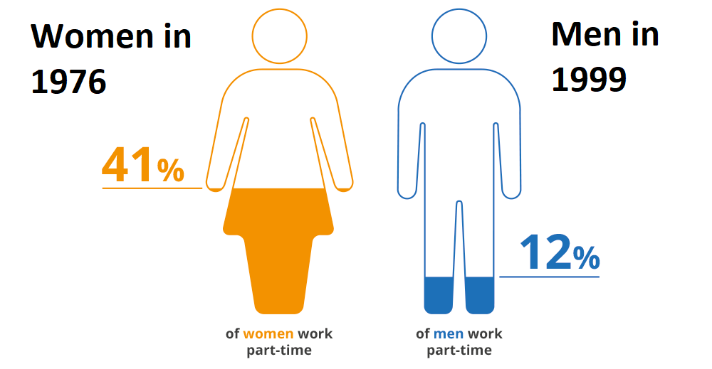

Chapter 4 Are you nuts
One Sample T-Test
4.1 Learning Goals
- Conceptual Skills: What makes a good comparison. Never use pie charts.
- Data Skills:
- R Basics: Install and load a package. Load Stata files into R.
- Data Manipulation:
tidyverselanguage (glimpse(),count(),filter(),summarise()). - Data Visualization: Pie chart and bar plot.
Social sciences is about the study of human beings and their interactions. As such, we frequently want to compare two or more groups of human beings, organizations, teams, countries, etc., with each other to see whether they are similar or different from each other. Sometimes we also want to track individuals over time and see how they may have changed in some way or other. In short, comparing groups is an essential technique to make inferences and helps us better understand the diversity surrounding us.
4.2 Story Telling
Groups can be compared via numeric figures or graphical instruments. Numeric summaries can be the mean, median or mode. But it can be as simple as a percentage or proportion. A graphical representation can be a boxplot, histogram or density curve. Note that certain calculations and visualizations only make sense for continuous variables (cf. scale of measurements).
Most data visualization is done for the purpose of communication. We have an insight about a dataset, and we have a potential audience, and we would like to convey our insight to our audience. To communicate our insight successfully, we will have to present the audience with a clear and exciting story.

Figure 4.1: Figure 1: Possible gender difference in working parttime.
4.3 Comparability
What makes a good comparison? Before we can jump into group comparisons, we need to make ourselves aware of whether our groups can be compared in the first place. We are looking at the characteristics of our groups. Some commonly considered features include:
Size: Are the groups about equally large?

Time: Was the data collected around the same time?

Exogenous variables: Is the distribution of characteristics we are not interested in approximately the same across groups?

4.4 SOEP Practice Data
The SOEP practice dataset is a highly simplified Stata practice dataset, which can be downloaded from the homepage of DIW Berlin (in German or English):
https://www.diw.de/en/diw_01.c.603154.en/soep_in_the_college_classroom.html
There are two versions (years 2000-2004, 9 variables and years 2015-2019, 15 variables). They contain multiple observations per person over time. Each row is uniquely identified by a year-id combination (long format panel data).
4.4.1 Loading the Data
In the following a temporary file is created to store the .zip information from SOEP practice data. Thus there is no need to manually click and download a file and set the correct path on the computer.
# load package
library(haven)
# tempfile returns a vector of character strings which can be used as names for temporary files.
temp <- tempfile()
# download the .zip file to your temporary file location
download.file("https://www.diw.de/documents/dokumentenarchiv/17/diw_01.c.412698.de/soep_lebensz_en.zip",temp)
# type temp in your console to get this file name
# you can open your temporary files on Windows: %userprofile%\AppData\Local\Temp
# you may search for the file name
# load Stata data with haven package
soep <- read_dta(unz(temp, "soep_lebensz_en.dta"))
# unlink deletes the file(s) or directories specified by x.
unlink(temp)If data is somewhere else, you need to specify the exact path (relative or absolute path) to the data. If you use haven (or any other package) for the first time, you have to install (e.g. via a command install.packages("haven")). You can also install and check packages in the right lower panel (cf. “packages”).
4.4.2 Inspect the Data
The SOEP practice dataset 1 consists of a total of 9 original variables and 12,922 measurements. We can see 9 variables as columns with the glimpse() function. The first two variable (id, year) are identifier. The panel data is in long format, i.e. every row is a person-year combination. It covers five time points. The last two variables are standardized versions (satisfaction and health). Actually we have 5 variables to analyze.
library(tidyverse)
glimpse(soep)## Rows: 12,922
## Columns: 9
## $ id <dbl> 312, 399, 399, 457, 457, 457, 748, 761, 761, 1044, 1044, 10…
## $ year <dbl> 2004, 2000, 2001, 2000, 2002, 2004, 2000, 2000, 2001, 2000,…
## $ sex <dbl+lbl> 1, 0, 0, 0, 0, 0, 1, 1, 1, 0, 0, 0, 0, 0, 1, 1, 1, 1, 1…
## $ education <dbl> NA, 12.0, 12.0, 18.0, 18.0, 18.0, 14.0, 16.0, 16.0, 14.0, 1…
## $ no_kids <dbl> 1, 1, 1, 0, 0, 0, 0, 2, 2, 1, 1, 1, 1, 1, 0, 0, 0, 0, 0, 2,…
## $ health_org <dbl+lbl> 4, 4, 4, 3, 3, 2, 3, 3, 3, 4, 3, 4, 4, 4, 2, 2, 2, 1, 2…
## $ satisf_org <dbl+lbl> 7, 8, 9, 8, 7, 4, 5, 7, 7, 5, 7, 8, 6, 7,…
## $ health_std <dbl> 0.5670103, 0.5670103, 0.5670103, -0.4639175, -0.4639175, -1…
## $ satisf_std <dbl> -0.09090909, 0.47727272, 1.04545450, 0.47727272, -0.0909090…First, let’s check the consecutive time points. The count() function provides the number of occurrences for values of a variables.
soep %>%
count(year)## # A tibble: 5 × 2
## year n
## <dbl> <int>
## 1 2000 3198
## 2 2001 2690
## 3 2002 2485
## 4 2003 2299
## 5 2004 2250We observe a decline in observations over time. People drop out of the survey for various reasons (panel attrition). SOEP regularly adds refreshment samples to compensate for this. Sometimes we miss data in between years. Person number 457 participated in 2000, 2002 and 2004:
soep %>%
filter(id == 457)## # A tibble: 3 × 9
## id year sex education no_kids health_org satisf_org health_std
## <dbl> <dbl> <dbl+lbl> <dbl> <dbl> <dbl+lbl> <dbl+lbl> <dbl>
## 1 457 2000 0 [male] 18 0 3 [satisfactory] 8 [8 Sati… -0.464
## 2 457 2002 0 [male] 18 0 3 [satisfactory] 7 [7 Sati… -0.464
## 3 457 2004 0 [male] 18 0 2 [poor] 4 [4 Sati… -1.49
## # … with 1 more variable: satisf_std <dbl>Person 457 was not available in the year 2001 for some reason.
4.4.3 Stata information
The haven package tries to keep as much information from the Stata source as possible. This can be helpful because we can look up background information, e.g. about coding.
attr(soep$sex, "labels")## male female
## 0 14.4.4 Summary statistics
Now let’s have a look at summary statistics for the dataset. The stargazer package (with type="text") displays number of observations, mean, standard deviation, min, max and percentiles to the console or markdown file (it produces a .tex table by default). stargazer requires a dataframe as input. haven created a tibble from the Stata .dta file. Finally, we select all variables but the first two, since they are identifier and any calculation, e.g. the mean of personal IDs, does not make much sense here.
library(stargazer)
stargazer(as.data.frame(soep)[,(3:9)], type="text")##
## ===============================================
## Statistic N Mean St. Dev. Min Max
## -----------------------------------------------
## sex 12,922 0.539 0.499 0 1
## education 11,454 11.874 2.469 7.000 18.000
## no_kids 12,016 0.647 0.931 0 3
## health_org 12,907 3.455 0.973 1 5
## satisf_org 12,922 7.156 1.762 0 10
## health_std 12,907 0.005 1.003 -2.526 1.598
## satisf_std 12,922 -0.002 1.001 -4.068 1.614
## -----------------------------------------------The mean of sex is 0.539. What does it tell you?
4.4.5 Missing data
Check out the first glimpse() table. Have you noticed the value NA in education? NA stand for non available and is the indicator for missing data in R. We ask for a table count of all values in the data that are either missing or not missing.
table(is.na(soep))##
## FALSE TRUE
## 113894 2404One option is substituting values (e.g. the mean) for missing cells (imputation). The alternative, for simplicitiy, is removing all rows which contain a missing value in any column. This is called a complete case analysis.
soep_no_na <- soep %>% filter(complete.cases(.))4.4.6 Standardization
Look again at the glimpse() output or stargazer() table. Notice two versions of satisfaction and health, i.e. satisf_org and satisf_std which represent satisfaction on the original scale (from 0 to 10) and a standardized version of satisfaction. Health is ranging from 1 to 5. How can we compare the mean of satisfaction and health?
In statistics, standardization is the process of putting different variables on the same scale. This process allows you to compare scores between different types of variables (compare apples with apples instead of apples with bananas). Typically, to standardize variables, you calculate the mean and standard deviation for a variable (cf. z-score). Then, for each observed value of the variable, you subtract the mean and divide by the standard deviation.
Consequently, standardized variables have a mean of 0 and a standard deviation of 1.
soep_no_na %>%
summarise(across(c(satisf_std, health_std), list(mean, sd))) %>%
`colnames<-`(c("mean of std. satis", "sd of std. satis",
"mean of std. health", "sd of std. health"))## # A tibble: 1 × 4
## `mean of std. satis` `sd of std. satis` `mean of std. health` `sd of std. he…`
## <dbl> <dbl> <dbl> <dbl>
## 1 0.00174 1.00 -0.0102 0.998Here summarise is asked to apply the mean() and sd() function “across” the two columns satisf_std and health_std. The means are close to zero and the standard deviation is close to one. The minor differences result from our complete case analysis (we already dropped some cases which might have been used for the initial standardization).
4.5 Never use pie charts
Pit charts are evil. Why? Check the note of the documentation of pie():
?pie()Pie charts are a very bad way of displaying information. The eye is good at judging linear measures and bad at judging relative areas. A bar chart or dot chart is a preferable way of displaying this type of data.
Cleveland (1985), page 264: “Data that can be shown by pie charts always can be shown by a dot chart. This means that judgements of position along a common scale can be made instead of the less accurate angle judgements.” This statement is based on the empirical investigations of Cleveland and McGill as well as investigations by perceptual psychologists.
Synthetic data for a graph.
# Create data for the graph.
x <- c(14, 62, 17, 53)
labels <- c("London", "New York", "Singapore", "Mumbai")# Plot the chart.
pie(x,labels)
Do a barplot instead.
# Plot the chart.
barplot(x, names.arg = labels)
4.6 From Zero To Hero
This chapter introduces the workhorse of empirical research in the social science: Regression.
![horse]()
4.7 From Artists and Economists
“Every artist was first an amateur.”
I speculate that the quote from Mr. Emerson is also true for social scientists.
The first and most important point is to choose a topic that you really care about.
This can be related to your hobbies, families or friends. Related to your education, job or neighborhood. It can be something from the present or past. It can be your pet as well as your personality, believes and attitudes. It can be gardening or Fortnite. Choose something that you are really interested in. Next, retain a neutral point of view. Collect and analyze data first, discuss and compare your results to others, conclude at the end.
In this primer I selected artists, specifically famous painter. First, I search for previous research on artists:
“Paul Cezanne died in October 1906 at the age of 67. In time he would be generally regarded as the most influential painter who had worked in the nineteenth century (e.g., Clive Bell, 1982; Clement Greenberg, 1993). Art historians and critics would also agree that his greatest achievement was the work he did late in his life.”
I wonder if there is a relationship between the age of an artist and his productivity? Do artists improve their skills and performance over an entire lifetime step-by-step such that older artists are better than younger artists since they had more “time to practice”? Or is there an optimum age for performance as compared to athletic performances which reaches a peak in youth? Perhaps no one can tell if and when you are kissed by a muse, so exceptional art happens randomly? Another channel could be that it requires time to become more well-known. You need time to travel and show or sell your art in different places. Thus when you produce “more art” you increase the chance to be discovered by the public or a patron? Have you ever heard of an artist who exactly created one piece of art?
That’s a pretty good start for a research inquiry :) I raise the question:
A research question is …
focused on a single issue, specific enough to answer thoroughly and feasible to answer within the given timeframe or practical constraints not to mention relevant to your field of study.But what exactly is productivity and how can we measure it? To keep things simple we follow the literature and measure productivity via auction prices for paintings. That’s a very economic perspective on art.
Operationalization is …
the process of defining the measurement of a phenomenon that is not directly measurableWhat is intelligence and how can we measure it? Perhaps with the intelligence quotient (IQ). Perhaps something else.
4.8 Data is everywhere
Researchers use auction price data for which they have to pay. I use free information from a Wikipedia List of most expensive paintings of all time. The auction prices are inflation-adjusted by consumer price index in millions of United States dollars in 2019. That’s another interesting economic procedure, that we take for given at this analysis
4.8.1 Data in a table
This is the data in datatable format (i.e. you can search and sort the data in the html document):
Tabular data is…
common in data analysis. You can create a table in Word or Excel.4.8.2 Data in a graph
Two variables from our data table can be depicted in what is called a scatterplot.

The axes are called …
ordinate or y-axis (here: price) and abscicca or x-axis (here: age).4.8.3 The trend
Can you spot a trend in the data?
The line plot suggests that the relationship between price and age exhibits a positive trend. There is an increase in price for older artists. The older the artist, the higher the auction prices.

4.8.4 The blackbox
The mission is to find a mathematical function that describes the trend. In other words, we are looking for the black box that transforms the input into the output:

alt text here
A mathematical function is …
an expression, rule, or law that defines a relationship between one variable (the independent variable, on the x-axis) and another variable (the dependent variable, on the y-axis).From looking at the graph, here are two suggestions:
\[ \begin{align} \text{price} = 80 + 0.5 \cdot \text{age} \tag{Suggestion 1} \\ \text{price} = 90 + 0.2 \cdot \text{age} \tag{Suggestion 2} \\ \end{align}\]
A linear function is …
defined by two components, intercept (with the y-axis) and it’s slope.
How can we compare the two suggested lines? Which linear function represents the relationship best?
4.8.5 Nobody’s perfect
We all make mistakes. So do the linear functions:
\[ \begin{align} \text{price} = 80 + 0.5 \cdot \text{age} \tag{Suggestion 1} \\ 101 = 80 + 0.5 \cdot 42 \tag{Calculation for Hohlbein} \\ \end{align}\]
The equation tells (or predicts) that for any artist at the age of 42 it expects a auction price for a painting of 101 million US Dollar. Darmstadt Madonna was sold for 85 million US dollar. The linear function overestimated the true value. When you look at the graph, you see some predictions are more accurate (close to the true values) than others. All are either above or below the line.
A residual (or error) is …
the vertical distance between the actual and the predicted value.
4.8.6 Vocab Wrap-Up
Let’s wrap up our regression vocab! We want to find an equation that describes the phenomenon of interest:
\[ \begin{align} \text{outcome} &= f(\text{explanatory}) + \text{noise} \tag{Generic statistical model} \\ \text{outcome} &= \text{intercept} + \text{slope} \cdot \text{explanatory} + \text{noise} \tag{Generic linear model} \\ \end{align}\]
A regression model is suggested by the researcher. A more concrete regression model looks like this:
\[Y = \beta_1 + \beta_2 X + \epsilon\]
A model can be easy or complicated. It definitely contains variables and parameters.
- Variables: Things that we measure (or have data).
- Parameters: Constant values we believe to represent some fundamental truth about the relationship between the variables.
What we (i.e. the statistical software) actual do is an estimation. In textbooks the same equation can be found with hats:
\[ \widehat{Y} = \widehat{\beta}_1 + \widehat{\beta}_2 \cdot X \] \(\widehat{Y}\) are called the fitted or predicted values. \(\widehat{\beta}\) are regression coefficients (this is the estimate of the unknown population parameter). As we have seen in the graph before, the differences between the actual and the predicted values are the residuals \(e = Y - \widehat{Y}\).
4.9 For the truly dedicated
Let’s get this party started!

Carlton Dance
The overall goal is to make as little as possible mistakes! What kind of mistake? The deviation from the observed values! What could come to your mind is to minimize the sum of all errors:
\[\sum e \rightarrow \min\] But wait, there is more. Is it fair to say that the sum should be small? Compare The Scream and Meules, their deviations are \(+17.5\) and \(-13.6\) (very similar). So taken these two together, there’s almost not mistake! That is to say, positive and negative deviations cancel each other out. Thus we need one more twist in the story:
\[\sum e^2 \rightarrow \min\]
The fitting procedure is …
is called ordinary least squares (short OLS). The goal of OLS is to minimize the residual sum of squares.4.9.1 Algebra
Algebra comes from Arabic, meaning “reunion of broken parts”. We often work with matrices and vectors.
Now let’s put all the things together. By convention, the normal version of a vector is a vertical list of numbers in big parentheses (column vector). Transpose is when we change the rows and columns. In order to square a vector we need the following:
\[\sum e^2 = e^T \cdot e \rightarrow \min\] Let’s introduce matrix notation (there are 6 observations and two parameters):
\[ \begin{align} Y &= \beta_0 + \beta_1 X + \epsilon \tag{X is a variable, Y is a variable} \\ \begin{pmatrix} Y_1 \\ Y_2 \\ Y_3 \\ Y_5 \\ Y_6 \end{pmatrix} &= \begin{pmatrix} 1 & X_{11} \\ 1 & X_{12} \\ 1 & X_{13} \\ 1 & X_{14} \\ 1 & X_{15} \\ 1 & X_{16} \end{pmatrix} \begin{pmatrix} \beta_1 \\ \beta_2 \end{pmatrix} + \begin{pmatrix} \epsilon_1 \\ \epsilon_2 \\ \epsilon_3 \\ \epsilon_4 \\ \epsilon_5 \\ \epsilon_6 \\ \end{pmatrix} \\ y &= X \beta + \epsilon \tag{X is a matrix, y is a vector} \end{align}\]
The residual is \(e = y - X \beta\) which we can plug in our minimal sum of squares:
\[\begin{align} \sum e^2 &= e^T \cdot e \tag{short RSS}\\ &= (y - X \beta )^T (y - X \beta) \tag{$(A+B)^T = A^T + B^T$}\\ &= (y^T - X^T \beta^T) (y - X \beta) \\ &= y^T y - y^T X \beta - X^T \beta^T y + X^T \beta^T X \beta \\ &= y^2 \underbrace{- 2 \beta^T X^T y}_{??} + \beta^2 X^2 \\ \end{align}\]
Did you notice what happened in the middle? The transpose of the first term is equal to the second:
\[\begin{align} (y^T X \beta)^T = y X^T \beta^T \end{align}\]
4.9.2 Analysis
In Analysis we often work with functions.
Next, we are ready to optimize. Optimization (in math and economics) is done by differentiation:
\[\begin{align} \frac{\partial RSS}{\partial \beta} &= -2 X^T y + 2 \beta X^T X = 0 \tag{first derivative equal to zero} \\ 2 \beta X^T X &= 2 X^T y \tag{rearrange terms}\\ \beta X^T X &= X^T y \tag{the "normal equation"} \\ \beta &= (X^T X)^{-1} X^T y \tag{Bam}\\ \end{align}\]
4.9.3 Take the Long Way Home
The computer does the magic for us.

Magic Alice
Those \(\beta\) coefficients are one of the most important regression results. Retrieve them step by step to enhance your understanding of the math and coding as the same time:
First, we retrieve matrix X from the data set:
X## [,1] [,2]
## [1,] 1 91
## [2,] 1 86
## [3,] 1 67
## [4,] 1 45
## [5,] 1 80
## [6,] 1 71Second, the transpose of X has two rows and six columns:
t(X)## [,1] [,2] [,3] [,4] [,5] [,6]
## [1,] 1 1 1 1 1 1
## [2,] 91 86 67 45 80 71Next, calculate the square of the matrix (transpose times original):
t(X)%*%X## [,1] [,2]
## [1,] 6 440
## [2,] 440 33632Then, the inverse of everything in parentheses (the above matrix product):
solve(t(X)%*%X)## [,1] [,2]
## [1,] 4.10546875 -0.0537109375
## [2,] -0.05371094 0.0007324219Next, the product of this inverse and the transpose:
solve(t(X)%*%X) %*% t(X)## [,1] [,2] [,3] [,4] [,5]
## [1,] -0.78222656 -0.513671875 0.506835938 1.68847656 -0.191406250
## [2,] 0.01293945 0.009277344 -0.004638672 -0.02075195 0.004882813
## [,6]
## [1,] 0.291992188
## [2,] -0.001708984Finally, we multiply the vector \(y\):
solve(t(X)%*%X) %*% t(X) %*% y## [,1]
## [1,] 22.345215
## [2,] 1.165747There are two numbers. It’s the \(\beta\) vector! The first entry is the intercept and the second is the slope of the linear function:
\[Price = 22.3452 + 1.1657 \cdot Age\]
4.10 Survival of the Fittest Line
The above equation is the linear function that best describes the given data.

4.11 On the Shoulders of Giants
Fortunately, we are standing on the shoulders of giants. Clever people implemented the linear regression and all kinds of regressions and statistical tests in R.
lm(Price ~ Age.at.Death, data = artists)##
## Call:
## lm(formula = Price ~ Age.at.Death, data = artists)
##
## Coefficients:
## (Intercept) Age.at.Death
## 22.345 1.166knitr::include_graphics("workhorse.jpg")